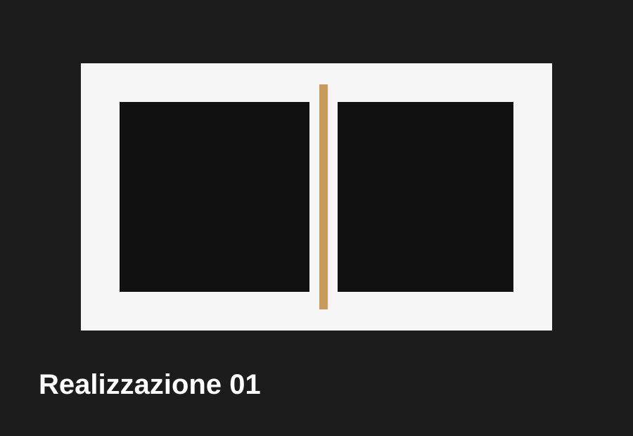
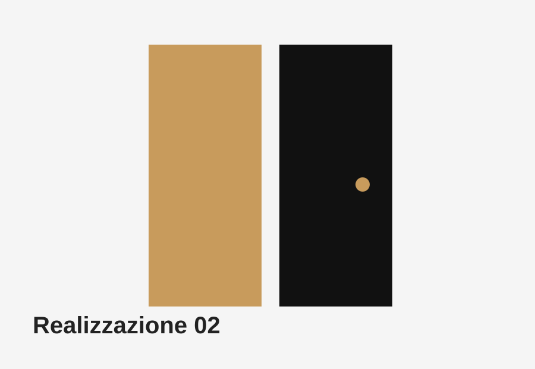
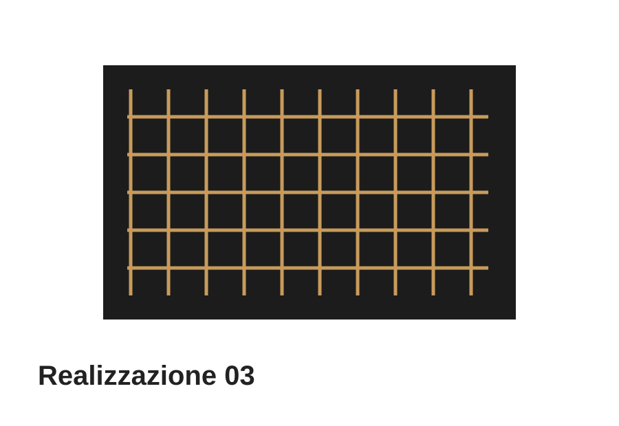
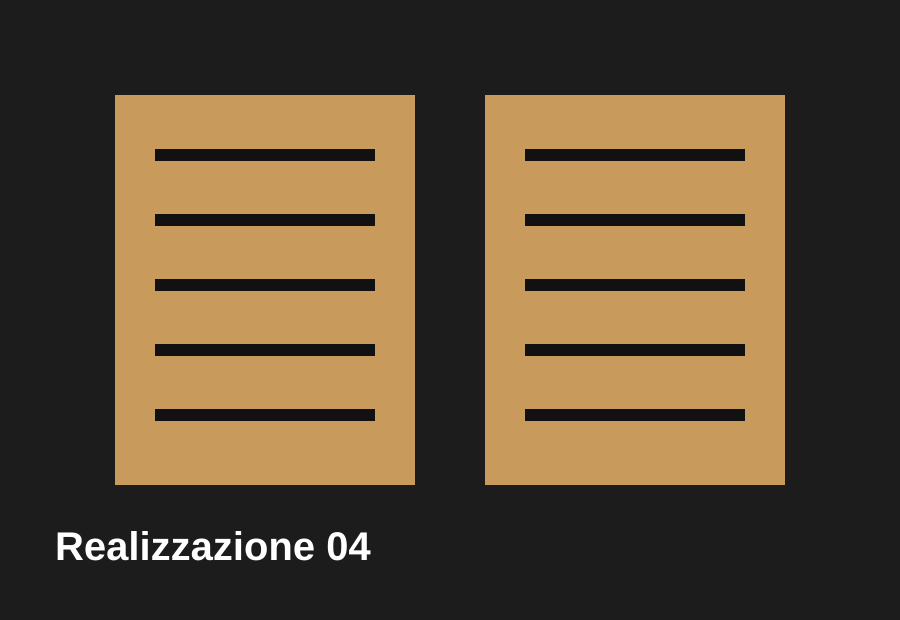
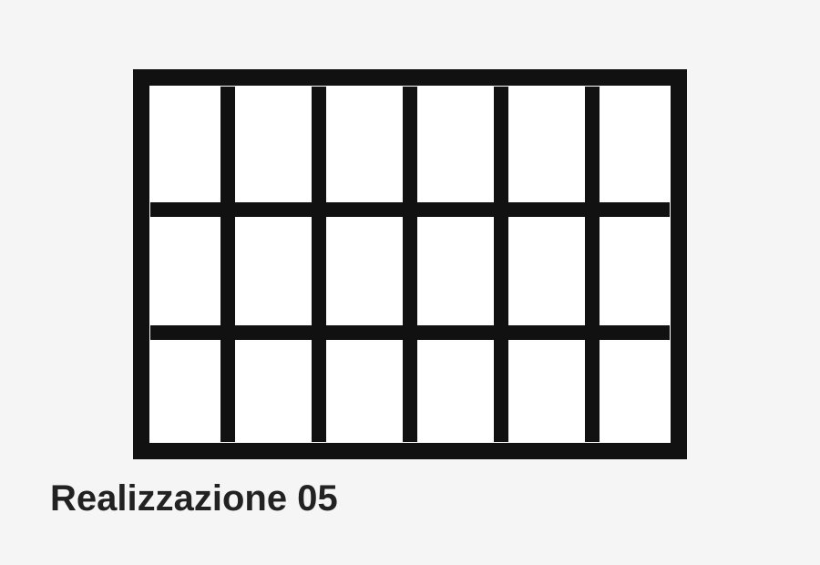
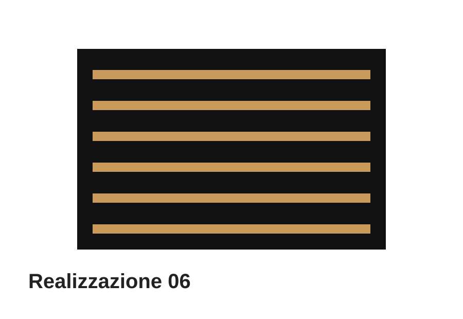
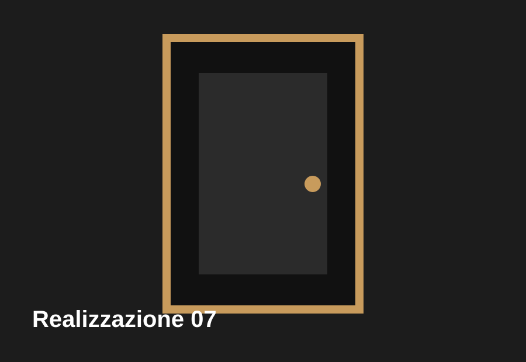
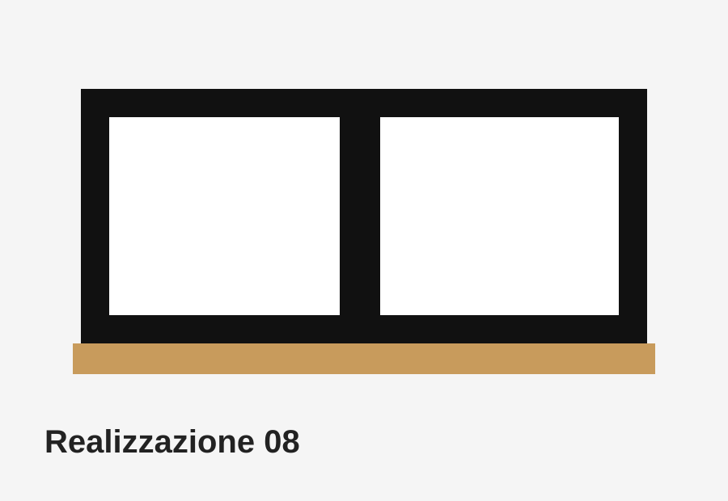
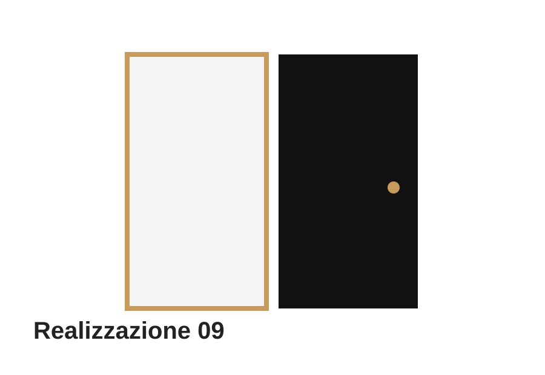

Infissi · Certaldo
Portfolio
Una galleria predisposta per mostrare installazioni reali di infissi, porte, zanzariere, persiane, inferriate, avvolgibili e blindate.

Infissi · Certaldo

Porte · Empoli

Zanzariere · Poggibonsi

Persiane · Castelfiorentino

Inferriate · Firenze provincia

Avvolgibili · Certaldo

Blindate · Empoli

Infissi · Firenze provincia

Porte · Castelfiorentino